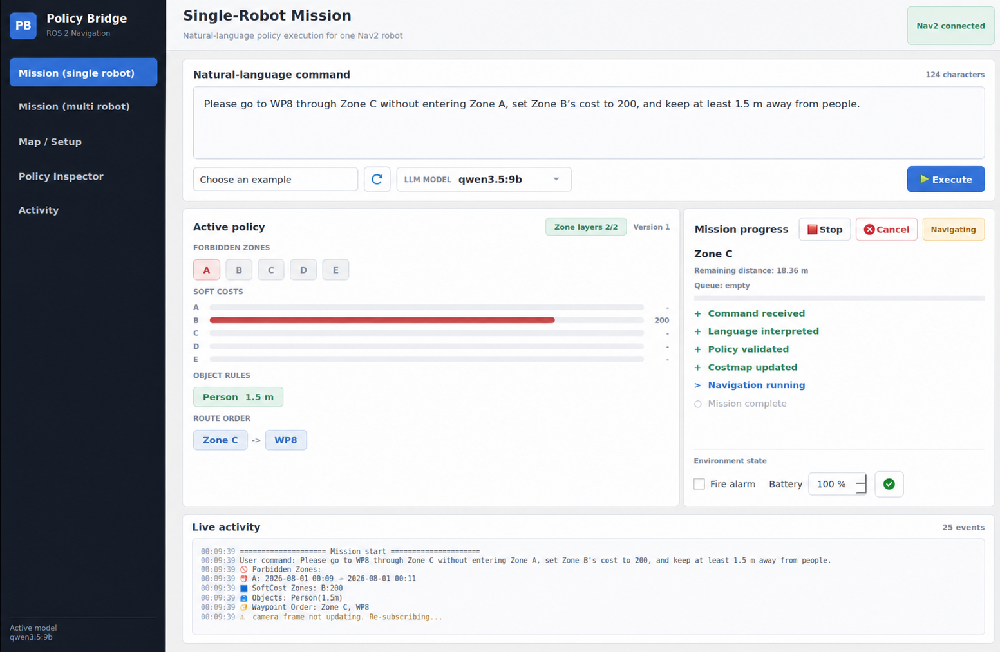
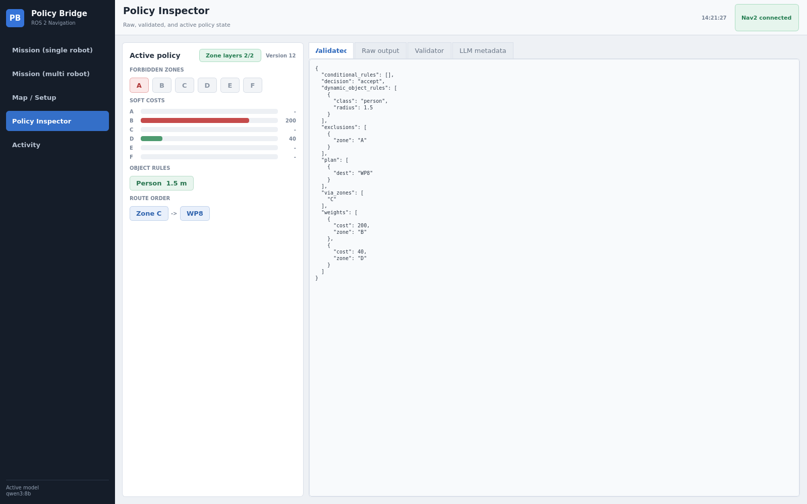
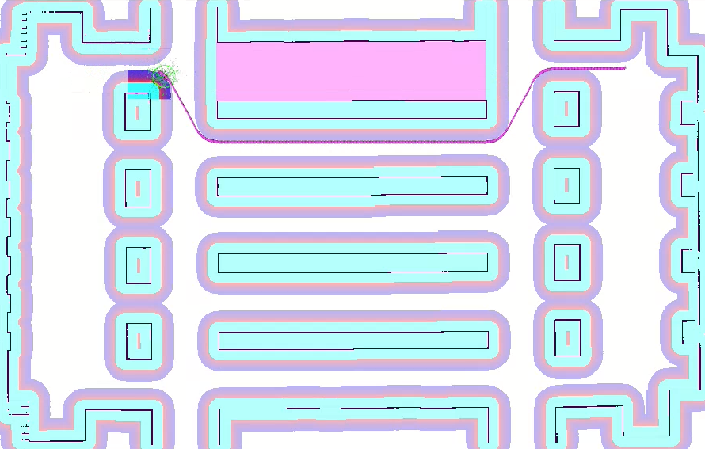

1
Interpret
An English command is converted into policy JSON with route, zone, object, time, and event fields.

ROS 2 Humble · Nav2 · Local LLM
Natural-Language to Nav2 for Industrial AMRs
Turn an operator's English command into a structured, validated policy that updates keepouts, zone costs, object clearance, and ordered robot goals at runtime.
System workflow
The language model owns semantic interpretation. The validator checks the policy contract before ROS topics or Nav2 goals can change.
An English command is converted into policy JSON with route, zone, object, time, and event fields.
Unknown labels, malformed structures, invalid ranges, and contradictory field roles are rejected.
Validated fields are published to keepout, soft-cost, and object-aware costmap layers.
Named waypoints and required transit zones become an ordered Nav2 mission with live progress.
“Please go to WP8 through Zone C without entering Zone A, set Zone B’s cost to 200, and keep at least 1.5 m away from people.”
{
"plan": [{"dest": "WP8"}],
"via_zones": ["C"],
"exclusions": [{"zone": "A"}],
"weights": [{"zone": "B", "cost": 200}],
"dynamic_object_rules": [
{"class": "person", "radius": 1.5}
]
}Operator interface
The GUI keeps the active policy, route, environment state, queue, and Nav2 progress visible while the robot moves.
Submit a natural-language task, choose the local LLM, and watch each stage move from interpretation to costmap update and navigation.
Add waypoints by map click or map-frame coordinates, draw policy zones or enter their bounds, and save the labels as a map-specific setup.
The interface adds one mission panel per discovered namespace, while costmap policies remain shared across the fleet.
Raw LLM output, validated JSON, validator findings, and active policy state are separated for debugging and experiment auditing.

Runtime demonstrations
Map-specific labels become executable policy inputs, while namespaced Nav2 stacks keep each route independent and receive a shared fleet costmap policy.
In this demonstration, WP9 is placed from the map interface and Zone F is drawn as an additional policy region. The saved setup is used by command interpretation, validation, the waypoint mission, and the zone-aware costmap layers.
Click the map or enter map-frame coordinates.
Draw a rectangle or enter its map bounds.
Run the natural-language command with the new labels.
Please go to WP9 without passing through Zone F.
Policy Bridge discovers each namespaced Nav2 robot and creates a separate mission panel, while shared policy layers apply the same Zone and object constraints across the fleet.
Expose /<namespace>/global_costmap/costmap and /<namespace>/follow_waypoints.
Add the keepout, soft-cost, and object-aware plugins to every robot's global costmap parameters.
Each robot follows its own route while Zone and object policies remain shared across the fleet.
For the next 30 minutes, prohibit entry into Zone B and D and go to WP6.
Visit WP5 first, followed by WP1.
Navigate to WP1 before continuing to WP8.
plugins: [static_layer, obstacle_layer,
keepout_command_layer, zone_softcost_layer,
object_avoidance_layer, inflation_layer]
keepout_command_layer:
plugin: "my_costmap_layers::KeepoutCommandLayer"
forbidden_zones_topic: "/fleet/forbidden_zones_update"
zone_geometry_topic: "/zone_geometry_update"
zone_softcost_layer:
plugin: "my_costmap_layers::ZoneSoftCostLayer"
zone_cost_overrides_topic: "/fleet/zone_cost_overrides"
zone_geometry_topic: "/zone_geometry_update"
object_avoidance_layer:
plugin: "my_costmap_layers::ObjectAvoidanceLayer"
object_positions_topic: "/fleet/object_world_positions"
object_avoidance_radius_topic: "/fleet/object_avoidance_radius"Policy schema
The validated policy follows the same field-level contract used in the paper and implemented by Policy Bridge.
Accepts an executable interpretation or rejects the requested policy.
decisionIdentifies a contradiction or an unsupported policy request.
reason_codeWaypoint labels or map-frame poses arranged in execution order.
planNamed zones that the planned route must traverse.
via_zonesZone-level exclusions with an optional duration or temporal condition.
exclusionsExplicit zone-specific soft costs from 0 to 253.
weightsRecognized object classes and their required clearance radii.
dynamic_object_rulesZone actions activated by states such as a fire alarm or low battery.
conditional_rulesPolicy-aware navigation
Hard and weighted zone updates are projected into Nav2's costmap. The global planner then produces a route that reflects the validated policy rather than an unstructured language string.

Run the interface
Place the packages in the workspace src directory, build them, source the workspace, and start Policy Bridge.
cd ~/turtlebot3_ws
colcon build --packages-select my_costmap_layers policy_bridge --symlink-install
source ~/turtlebot3_ws/install/setup.bash
ros2 run policy_bridge policy_bridge_guiResearch prototype